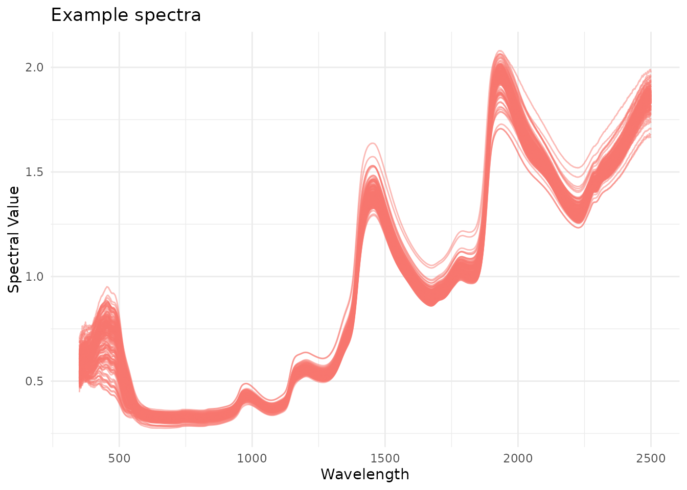

Introduction
Originally designed application in the context of resource-limited
plant research and breeding programs, waves provides an
open-source solution to spectral data processing and model development
by bringing useful packages together into a streamlined pipeline. This
package is wrapper for functions related to the analysis of point
visible and near-infrared reflectance measurements. It includes
visualization, filtering, aggregation, pretreatment, cross-validation
set formation, model training, and prediction functions to enable
open-source association of spectral and reference data.
Use
Follow the installation instructions below, and then go wild! Use
waves to analyze your own data. Please report any bugs or
feature requests by opening issues in the waves
repository.
Installation
Install the latest waves release directly from CRAN:
install.packages("waves")
library(waves)Alternatively, install the development version to get the most up-to-date (but not necessarily thoroughly tested) version:
install.packages("devtools")
devtools::install_github("GoreLab/waves")
library(waves)1. Format your data
Match spectra with reference values so that you have a
data.frame with unique identifiers, reference values, and
other metadata as columns to the left of spectral values. Spectral
column names should start with “X”. Remove rows with missing values.
ikeogu.2017[1:7, 1:7]
#> # A tibble: 7 × 7
#> study.name sample.id DMC.oven TCC X350 X351 X352
#> <chr> <chr> <dbl> <dbl> <dbl> <dbl> <dbl>
#> 1 C16Mcal C16Mcal_1 39.6 1.00 0.488 0.495 0.506
#> 2 C16Mcal C16Mcal_2 35.5 17.0 0.573 0.568 0.599
#> 3 C16Mcal C16Mcal_3 42.0 21.6 0.599 0.627 0.624
#> 4 C16Mcal C16Mcal_4 39.0 2.43 0.517 0.516 0.514
#> 5 C16Mcal C16Mcal_5 33.4 24.0 0.519 0.548 0.554
#> 6 C16Mcal C16Mcal_6 32.1 19.0 0.576 0.566 0.589
#> 7 C16Mcal C16Mcal_7 35.8 6.61 0.530 0.536 0.525
ikeogu.2017.prepped <- ikeogu.2017 %>%
dplyr::rename(unique.id = sample.id,
reference = DMC.oven) %>%
dplyr::select(unique.id, dplyr::everything(), -TCC) %>%
na.omit()
ikeogu.2017.prepped[1:7, 1:7]
#> # A tibble: 7 × 7
#> unique.id study.name reference X350 X351 X352 X353
#> <chr> <chr> <dbl> <dbl> <dbl> <dbl> <dbl>
#> 1 C16Mcal_1 C16Mcal 39.6 0.488 0.495 0.506 0.494
#> 2 C16Mcal_2 C16Mcal 35.5 0.573 0.568 0.599 0.593
#> 3 C16Mcal_3 C16Mcal 42.0 0.599 0.627 0.624 0.606
#> 4 C16Mcal_4 C16Mcal 39.0 0.517 0.516 0.514 0.536
#> 5 C16Mcal_5 C16Mcal 33.4 0.519 0.548 0.554 0.549
#> 6 C16Mcal_6 C16Mcal 32.1 0.576 0.566 0.589 0.591
#> 7 C16Mcal_7 C16Mcal 35.8 0.530 0.536 0.525 0.5392. Visualize spectra with plot_spectra()
To display outliers in a different color, set
detect.outliers to TRUE.
ikeogu.2017.prepped %>%
plot_spectra(
df = .,
num.col.before.spectra = 5,
detect.outliers = FALSE,
alternate.title = "Example spectra"
)
3. Perform outlier removal with filter_spectra().
waves uses Mahalanobis distance to identify outliers.
Mahalanobis distance is a common metric used to identify multivariate
outliers. The larger the value of Mahalanobis distance, the more unusual
the data point (i.e., the more likely it is to be a multivariate
outlier).
The distance tells us how far an observation is from the center of the cloud, taking into account the shape (covariance) of the cloud as well.
To detect outliers, the calculated Mahalanobis distance is compared against a distribution with degrees of freedom equal to the number of spectral data columns and an alpha level of 0.05.
filtered.df <- ikeogu.2017.prepped %>%
filter_spectra(
df = .,
filter = TRUE,
return.distances = TRUE,
num.col.before.spectra = 5,
window.size = 15
)
#>
#> Removed 0 rows.
filtered.df[1:5, c(1:5, (ncol(filtered.df) - 3):ncol(filtered.df))]
#> unique.id study.name reference X350 X351 X2497 X2498 X2499
#> 1 C16Mcal_1 C16Mcal 39.62109 0.4881079 0.4951843 1.866739 1.867465 1.870405
#> 2 C16Mcal_2 C16Mcal 35.52017 0.5727389 0.5682541 1.893840 1.901451 1.891114
#> 3 C16Mcal_3 C16Mcal 42.04462 0.5989934 0.6266454 1.834644 1.828793 1.826562
#> 4 C16Mcal_4 C16Mcal 39.00999 0.5169374 0.5164186 1.837023 1.836635 1.835856
#> 5 C16Mcal_5 C16Mcal 33.44273 0.5189608 0.5477946 1.900873 1.897076 1.899430
#> X2500
#> 1 1.870702
#> 2 1.888507
#> 3 1.832022
#> 4 1.834857
#> 5 1.896130No outliers were identified in the example dataset. Note the if
return.distances is set to TRUE, the rightmost
column contains Mahalanobis distances (h.distances).
4. Aggregate scans
If you have more than one scan per unique identifier, aggregate the
scans by mean or median with aggregate_spectra().
In this example, we will aggregate by study.name.
aggregated.test <- ikeogu.2017.prepped %>%
aggregate_spectra(
grouping.colnames = c("study.name"),
reference.value.colname = "reference",
agg.function = "mean"
)
aggregated.test[, 1:5]
#> # A tibble: 2 × 5
#> study.name reference X350 X351 X352
#> <chr> <dbl> <dbl> <dbl> <dbl>
#> 1 C16Mcal 36.1 0.559 0.562 0.569
#> 2 C16Mval 36.4 0.545 0.549 0.5525. Evaluate the predictive ability of your spectra
test_spectra() is a wrapper that performs spectral
pretreatment (5.1),
cross-validation set formation (5.2), and
model training functions over multiple iterations (5.3).
Note that the following subsections describe functions that are
called within test_spectra(). They do not need to be used
separately for model pretreatment, cross-validation set formation, or
model training.
Some of the arguments for this function are detailed below. A
description of output is below under section 5.4. See ?test_spectra() for
more information on the arguments and output for this function.
results.list <- ikeogu.2017.prepped %>%
dplyr::select(unique.id, reference, dplyr::starts_with("X")) %>%
na.omit() %>%
test_spectra(
train.data = .,
tune.length = 3,
num.iterations = 3,
pretreatment = 1
)
#> Warning: The `save.model` argument of `test_spectra()` is deprecated as of waves 0.2.0.
#> ℹ Models are now saved by default.
#> ℹ The deprecated feature was likely used in the waves package.
#> Please report the issue at <https://github.com/GoreLab/waves/issues>.
#> This warning is displayed once every 8 hours.
#> Call `lifecycle::last_lifecycle_warnings()` to see where this warning was
#> generated.
#> Warning: The `return.model` argument of `test_spectra()` is deprecated as of waves
#> 0.2.0.
#> ℹ Trained models are now returned by default.
#> ℹ The deprecated feature was likely used in the waves package.
#> Please report the issue at <https://github.com/GoreLab/waves/issues>.
#> This warning is displayed once every 8 hours.
#> Call `lifecycle::last_lifecycle_warnings()` to see where this warning was
#> generated.
#> Pretreatment initiated.
#> Training models...
#> Working on Raw_data
#> Warning: The `wavelengths` argument of `train_spectra()` is deprecated as of waves
#> 0.2.0.
#> ℹ Wavelength specification is now inferred from column names.
#> ℹ The deprecated feature was likely used in the waves package.
#> Please report the issue at <https://github.com/GoreLab/waves/issues>.
#> This warning is displayed once every 8 hours.
#> Call `lifecycle::last_lifecycle_warnings()` to see where this warning was
#> generated.
#> Warning: The `preprocessing` argument of `train_spectra()` is deprecated as of waves
#> 0.2.0.
#> ℹ Argument `preprocessing` is deprecated. Use `pretreatment` instead:
#> `pretreatment = 1:13` (all), or `pretreatment = 1` (raw only).
#> ℹ The deprecated feature was likely used in the waves package.
#> Please report the issue at <https://github.com/GoreLab/waves/issues>.
#> This warning is displayed once every 8 hours.
#> Call `lifecycle::last_lifecycle_warnings()` to see where this warning was
#> generated.
#> Warning: The `save.model` argument of `train_spectra()` is deprecated as of waves 0.2.0.
#> ℹ Models are now saved by default.
#> ℹ The deprecated feature was likely used in the waves package.
#> Please report the issue at <https://github.com/GoreLab/waves/issues>.
#> This warning is displayed once every 8 hours.
#> Call `lifecycle::last_lifecycle_warnings()` to see where this warning was
#> generated.
#> Loading required package: lattice
#>
#> Attaching package: 'pls'
#> The following object is masked from 'package:caret':
#>
#> R2
#> The following object is masked from 'package:stats':
#>
#> loadings
#> Returning model...5.1. Pretreat spectra
Specify which spectral pretreatments (1-13) to apply with the
parameter pretreatment. pretreat_spectra() can
also be used on its own to transform a data.frame using any/all of 12
available pretreatments:
- Raw data (no pretreatment is applied)
- Standard normal variate (SNV)
- SNV and first derivative
- SNV and second derivative
- First derivative
- Second derivative
- Savitzky–Golay filter (SG)
- SNV and SG
- Gap segment derivative (window size = 11)
- SG and first derivative (window size = 5)
- SG and first derivative (window size = 11)
- SG and second derivative (window size = 5)
- SG and second derivative (window size = 11)
ikeogu.2017.prepped[1:10, ] %>% # subset the first 10 scans for speed
pretreat_spectra(pretreatment = 2:13) %>% # exclude pretreatment 1 (raw data)
bind_rows(.id = "pretreatment") %>%
gather(key = "wl",
value = "s.value",
tidyselect::starts_with("X")) %>%
mutate(wl = as.numeric(readr::parse_number(.data$wl)),
pretreatment = as.factor(pretreatment)) %>%
drop_na(s.value) %>%
ggplot(data = ., aes(x = wl, y = s.value, group = unique.id)) +
geom_line(alpha = .5) +
theme(axis.text.x = element_text(angle = 45)) +
labs(title = "Pretreated spectra",
x = "Wavelength",
y = "Spectral Value") +
facet_wrap(~ pretreatment, scales = "free")Note that the scales in this plot are “free”. Without free scales, anything derivative-based treatment (D1 or D2) looks like it’s a constant zero in comparison to those without derivative-based treatments (SNV, SG).
5.2. Specify a cross-validation scheme
Choose from random, stratified random, or a plant breeding-specific scheme from Jarquín et al., 2017. The Plant Genome. Options include:
cv.scheme |
Description |
|---|---|
NULL |
Random or stratified random sampling (does not take genotype or environment into account) |
| “CV1” | Untested lines in tested environments |
| “CV2” | Tested lines in tested environments |
| “CV0” | Tested lines in untested environments |
| “CV00” | Untested lines in untested environments |
If cv.scheme is set to NULL, the argument
stratified.sampling is used to determine whether stratified
random sampling should be performed. If TRUE, the reference
values from the input data.frame (train.data)
will be used to create a balanced split of data between the training and
test sets in each training iteration.
When using one of the four specialized cross-validation schemes
(“CV1”, “CV2”, “CV0”, or “CV00”), additional arguments are required: -
trial1 contains the trial to be tested in subsequent model
training functions. The first column contains unique identifiers, second
contains genotypes, third contains reference values, followed by
spectral columns. Include no other columns to right of spectra! Column
names of spectra must start with “X”, reference column must be named
“reference”, and genotype column must be named “genotype”.
-trial2 contains a trial that has overlapping genotypes
with trial1 but that were grown in a different site/year
(different environment). Formatting must be consistent with
trial1. - trial3 contains a trial that may or
may not contain genotypes that overlap with trial1.
Formatting must be consistent with trial1.
Cross-validation schemes can also be formatted outside of
test_spectra() using the function
format_cv().
5.3. Train spectral prediction models
Many of the arguments for test_spectra() are related to
model training: - model.method is the algorithm type to use
for training. See the table below for more information -
tune.length is the number of PLS components to test. This
argument is ignored if other algorithms are used -
best.model.metric indicates the metric used to decide which
model is best (“RMSE” or “R-squared”) - k-fold specifies
the number of folds used for cross-validation to tune model
hyperparameters within the training set - num.iterations
sets the number of training iterations - proportion.train
is the fraction of samples to be included in the training set (default
is 0.7)
Models can also be trained with the standalone function
train_spectra(). Model training is implemented with caret.
| Algorithm | model.method |
R package source | Tuning parameters (hyperparameters) |
|---|---|---|---|
| Partial least squares (PLS) | “pls” | pls |
ncomp |
| Random forest (RF) | “rf” | randomForest |
mtry |
| Support vector machine (SVM) with linear kernel | “svmLinear” | kernlab |
C |
| Support vector machine (SVM) with radial kernel | “svmRadial | kernlab |
sigma, C |
5.4. Output
test_spectra() outputs a list with four objects:
-
model.listis a list of trained model objects, one for each pretreatment method specified by thepretreatmentargument. Each model is trained with all rows of the inputdata.frame(df)
summary(results.list$model)
#> Data: X dimension: 173 2151
#> Y dimension: 173 1
#> Fit method: kernelpls
#> Number of components considered: 3
#> TRAINING: % variance explained
#> 1 comps 2 comps 3 comps
#> X 62.65 68.38 91.17
#> reference 63.34 75.71 76.87-
summary.model.performanceis adata.framecontaining summary statistics across all model training iterations and pretreatments. See below for a description of the summary statistics provided.
results.list$summary.model.performance
#> SummaryType ModelType RMSEp R2p RPD RPIQ CCC
#> 1 mean pls 1.95376055 0.81071964 2.2929289 2.7735699 0.89625825
#> 2 sd pls 0.09988373 0.02828736 0.1234882 0.1134962 0.01896225
#> 3 mode pls 1.85463762 0.83763116 2.3948734 2.8890861 0.91442160
#> Bias SEP RMSEcv R2cv R2sp best.ncomp best.ntree
#> 1 -0.03665762 1.9740073 2.00724284 0.751925760 0.76195677 3 NA
#> 2 0.15395985 0.1009188 0.02247514 0.008214219 0.02488035 0 NA
#> 3 -0.07584944 1.8738572 2.01782789 0.750662996 0.77188776 3 NA
#> best.mtry
#> 1 NA
#> 2 NA
#> 3 NA-
model.performanceis adata.framecontaining performance statistics for each iteration of model training separately (see below).
results.list$model.performance
#> Iteration ModelType RMSEp R2p RPD RPIQ CCC
#> 1 1 pls 1.854638 0.8376312 2.394873 2.889086 0.9144216
#> 2 2 pls 2.054388 0.7812326 2.155615 2.662208 0.8765871
#> 3 3 pls 1.952256 0.8132952 2.328298 2.769416 0.8977660
#> Bias SEP RMSEcv R2cv R2sp best.ncomp best.ntree
#> 1 -0.07584944 1.873857 2.017828 0.7506630 0.7718878 3 NA
#> 2 0.13311031 2.075678 1.981430 0.7606982 0.7803379 3 NA
#> 3 -0.16723372 1.972487 2.022471 0.7444160 0.7336447 3 NA
#> best.mtry
#> 1 NA
#> 2 NA
#> 3 NA-
predictionsis adata.framecontaining both reference and predicted values for each test set entry in each iteration of model training.
head(results.list$predictions)
#> Iteration ModelType unique.id reference predicted
#> 1 1 pls C16Mcal_5 33.44273 29.65800
#> 2 1 pls C16Mcal_17 36.62819 38.96732
#> 3 1 pls C16Mcal_18 39.56322 36.66932
#> 4 1 pls C16Mcal_28 29.21000 30.11402
#> 5 1 pls C16Mcal_31 32.40875 33.56930
#> 6 1 pls C16Mcal_37 36.74377 37.08231-
importanceis adata.framecontaining variable importance results for each wavelength at each iteration of model training. Ifmodel.methodis not “pls” or “rf”, this list item isNULL.
results.list$importance[, 1:7]
#> # A tibble: 3 × 7
#> Iteration ModelType X350 X351 X352 X353 X354
#> <int> <chr> <dbl> <dbl> <dbl> <dbl> <dbl>
#> 1 1 pls 0.0404 0.0397 0.0374 0.0369 0.0388
#> 2 2 pls 0.0277 0.0263 0.0279 0.0278 0.0283
#> 3 3 pls 0.0223 0.0225 0.0238 0.0242 0.0254| Statistic* | Description |
|---|---|
| RMSEp | Root mean squared error of prediction |
| R2p | Squared Pearson’s correlation between predicted and observed test set values |
| RPD | Ratio of standard deviation of observed test set values to RMSEp |
| RPIQ | Ratio of performance to interquartile difference |
| CCC | Concordance correlation coefficient |
| Bias | Average difference between the predicted and observed values |
| SEP | Standard error of prediction |
| RMSEcv | Root mean squared error of cross-validation |
| R2cv | Coefficient of multiple determination of cross-validation for PLS models |
| R2sp | Squared Spearman’s rank correlation between predicted and observed test set values |
| best.ncomp | Best number of components in a PLS model |
| best.ntree | Best number of trees in an RF model |
| best.mtry | Best number of variables to include at every decision point in an RF model |
*Many of the spectral model performance statistics are calculated
using the function postResampleSpectro() from the
spectacles package.
6. Save trained prediction models with
save_model()
- Intended for a production environment
- Can evaluate spectral pretreatment methods using the input dataset
- Selects best model using the metric provided with
best.model.metric(“RMSE” or “Rsquared”) - Returns trained model with option to save as .Rds object
- The
$modeloutput fromtest_spectra()can also be saved and used for prediction, butsave_model()will take the extra step of saving an .Rds file for you ifwrite.modelis set toTRUE.
In the example below, we’ll use one subset of the example dataset (“C16Mcal”) to create the model and then we’ll predict the other subset (“C16Mval”) in section 7.
model.to.save <- ikeogu.2017.prepped %>%
dplyr::filter(study.name == "C16Mcal") %>%
dplyr::select(unique.id, reference, dplyr::starts_with("X")) %>%
na.omit() %>%
save_model(
df = .,
write.model = FALSE,
pretreatment = c(1, 2, 8), # Raw, SNV, and SNVSG (typically best performers)
tune.length = 3,
num.iterations = 2,
verbose = FALSE
)Now let’s take a look at our trained model:
summary(model.to.save$best.model)
#> Data: X dimension: 120 2141
#> Y dimension: 120 1
#> Fit method: kernelpls
#> Number of components considered: 3
#> TRAINING: % variance explained
#> 1 comps 2 comps 3 comps
#> X 64.48 87.94 91.43
#> reference 33.93 64.97 87.18
model.to.save$best.model.stats %>%
gather(key = "statistic", value = "value", RMSEp_mean:best.mtry_mode) %>%
separate(statistic, into = c("statistic", "summary_type"), sep = "_") %>%
pivot_wider(id_cols = c(Pretreatment, summary_type),
names_from = statistic, values_from = value)
#> # A tibble: 3 × 15
#> Pretreatment summary_type RMSEp R2p RPD RPIQ CCC Bias SEP RMSEcv
#> <chr> <chr> <dbl> <dbl> <dbl> <dbl> <dbl> <dbl> <dbl> <dbl>
#> 1 SNVSG mean 1.72 0.860 2.74 3.33 0.915 0.142 1.74 1.54
#> 2 SNVSG sd 0.202 0.0650 0.718 0.182 0.0466 0.563 0.205 0.0300
#> 3 SNVSG mode 1.58 0.906 3.25 3.46 0.948 -0.256 1.60 1.56
#> # ℹ 5 more variables: R2cv <dbl>, R2sp <dbl>, best.ncomp <dbl>,
#> # best.ntree <dbl>, best.mtry <dbl>7. Predict phenotypic values with new spectra
If generating predictions from a saved model file in .Rds format, use
predict_spectra(). If the model object is already in your R
environment, the function stats::predict() can be used to
generate predictions. predict_spectra() pulls the best
model hyperparameters from your saved model object, but if using
stats::predict(), these must be supplied separately.
Using the model we trained in section 6, we can predict cassava root dry matter content for our held out validation set:
First, determine which pretreatment generated the best model and pretreat the new spectral dataset accordingly.
# Get the best pretreatment number from model stats
best.pretreatment.name <- model.to.save$best.model.stats$Pretreatment
best.pretreatment.num <- match(best.pretreatment.name,
c("Raw_data", "SNV", "SNV1D", "SNV2D", "D1", "D2", "SG",
"SNVSG", "SGD1", "SG.D1W5", "SG.D1W11", "SG.D2W5", "SG.D2W11"))
# Use the example validation set (C16Mval)
pretreated.val <- ikeogu.2017.prepped %>%
dplyr::filter(study.name == "C16Mval") %>%
pretreat_spectra(pretreatment = best.pretreatment.num)
pretreated.val.mx <- pretreated.val %>%
dplyr::select(starts_with("X")) %>%
as.matrix()
best.ncomp <- model.to.save$best.model.stats$best.ncomp_modePerform predictions!
predicted.values <- as.numeric(predict(model.to.save$best.model,
newdata = pretreated.val.mx,
ncomp = best.ncomp))How did we do?
spectacles::postResampleSpectro(pred = predicted.values,
obs = pretreated.val$reference)
#> RMSE Rsquared RPD RPIQ CCC Bias SE
#> 1.5560069 0.8420531 2.4672707 2.7511960 0.9009541 0.1604845 1.5708972Plot predictions
overall.range <- c(min(c(pretreated.val$reference, predicted.values)),
max(c(pretreated.val$reference, predicted.values)))
cbind(unique.id = pretreated.val$unique.id,
observed = pretreated.val$reference,
predicted = predicted.values) %>%
as_tibble() %>%
mutate(observed = as.numeric(observed),
predicted = as.numeric(predicted)) %>%
ggplot(aes(x = observed, y = predicted)) +
geom_abline(intercept = 0,
slope = 1,
color = "gray80") +
geom_point() +
coord_fixed(xlim = overall.range,
ylim = overall.range) +
labs(title = "Example dry matter content predictions",
x = "Observed",
y = "Predicted") +
theme_bw()